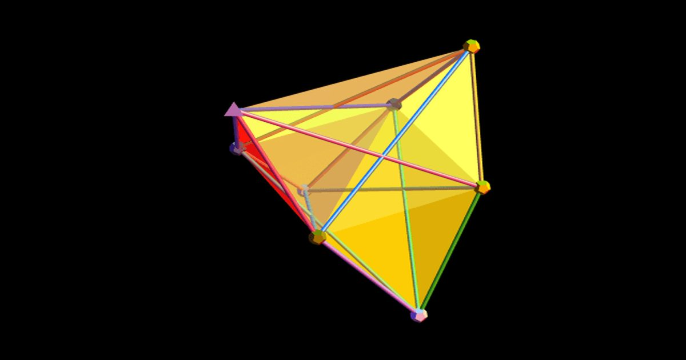

ИИ совершил первый значимый прорыв в теоретической физике
Одна из самых больших проблем — и, возможно, самая важная проблема для любого физика-теоретика — это связать то, что вы можете предсказать, с тем, что вы можете измерить экспериментально или наблюдательно.
Это ключ не только к проверке вашего нынешнего лучшего понимания реальности, но и к обнаружению любых аномалий, которые могут проложить путь к следующей революции в нашей концепции Вселенной.